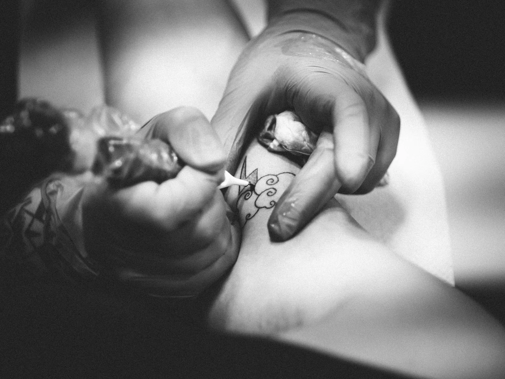
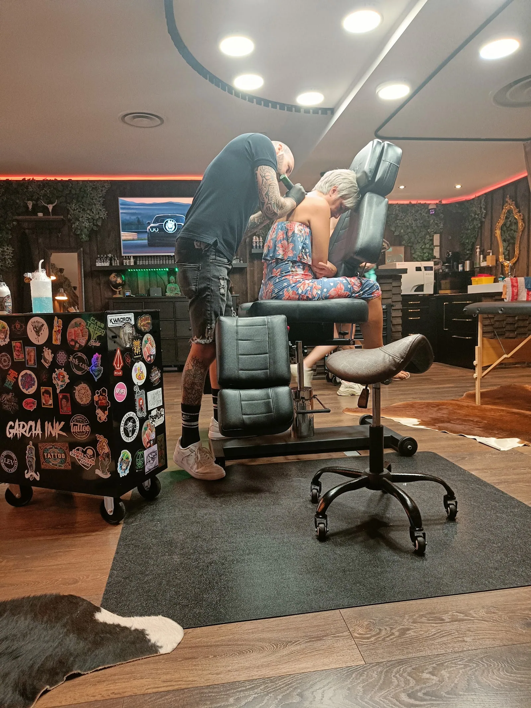

01
Realisme en portret
Een gezicht dat je dierbaar is, met de diepte en de details die het verdient.
Een realistisch portret, volle kleur, een fijne lijn of een sleeve die je verhaal vertelt. Bij Garcia Ink krijg je de rust en de uitleg om er een stuk van te maken waar je elke dag graag naar kijkt.
Realisme en portret Kleur
KleurWork so hard that one day your signature will be called an autograph.Het motto van de studio
Elk stuk wordt op maat getekend. Je brengt een foto, een idee of een verhaal mee, de rest bouwen we samen op.
Een gezicht dat je dierbaar is, met de diepte en de details die het verdient.
Grote stukken die over meerdere sessies groeien.

Een eerste tattoo, een datum of een symbool. Netjes gezet, met alle uitleg.


Warm licht, een propere werkplek en iemand die de tijd neemt om alles uit te leggen. Veel klanten komen voor hun eerste tattoo en gaan naar huis met de vraag wanneer de volgende kan.
Voor mijn eerste kleine tattoo. Super vriendelijk, goede uitleg en hij stelt je op je gemak. Mooi en proper gezet, exact zoals ik het wou.
Ine BuntinxReview op Google
Super mooie tattoo. Je voelt je dadelijk op je gemak, hij maakt er echt een kunstwerk van. Zeker een aanrader.
Lindsy VanvlemenReview op Google
Schepen Dejonghstraat 1, bus 8-9, 3800 Sint-Truiden. Stuur je idee met een foto via WhatsApp, dan spreken we een moment af.
| Maandag | Gesloten |
| Dinsdag | 10 tot 18 uur |
| Woensdag | 10 tot 18 uur |
| Donderdag | 10 tot 18 uur |
| Vrijdag | 10 tot 18 uur |
| Zaterdag | 10 tot 16 uur |
| Zondag | Gesloten |
Een scherpe foto met goed licht, liefst in hoge kwaliteit. Hoe meer detail op de foto, hoe meer detail in de tattoo.
Dat hangt af van de grootte en de stijl. Een sleeve wordt meestal over meerdere sessies opgebouwd. We maken samen een planning.
Zeker. Je krijgt alle uitleg vooraf, zodat je weet wat je kan verwachten.
Je krijgt na je sessie uitleg mee. Twijfel je later, stuur dan een foto via WhatsApp.
Ik maakte deze demo voor jullie om te tonen wat er kan. Na een kort gesprek maak ik er iets veel persoonlijkers van, helemaal naar jullie wens.
Vrijblijvend. Ik kom langs of we bellen.
Op maat, op jullie eigen domein.
Geen voorschot. Jullie betalen pas als alles klaar is.
Hosting, domeinnaam en kleine wijzigingen, zoals nieuwe openingsuren.
Omdat een voorbeeld meer zegt dan een mail. Zo zien jullie meteen wat er kan, en het kost jullie niets.
Nee. Het gesprek is vrijblijvend. Vinden jullie het niks, dan is het daarmee gedaan.
Na ons gesprek staat jullie site binnen 10 tot 14 dagen online.
Zeker. Jullie domeinnaam kan gewoon blijven, de nieuwe site komt in de plaats van de oude.
Nee, dat doe ik op basis van ons gesprek. Eigen foto's zijn mooi meegenomen, maar niet nodig om te starten.